人工智能学习笔记一――激活函数
激活函数对于人工神经网络模型去学习、理解非常复杂和非线性的函数来说具有十分重要的作用。它们将非线性特性引入到我们的网络中。如图1，在神经元中，输入的 inputs 通过加权，求和后，还被作用了一个函数，这个函数就是激活函数。引入激活函数是为了增加神经网络模型的非线性。没有激活函数的每层都相当于矩阵相乘。就算你叠加了若干层之后，无非还是个矩阵相乘罢了。
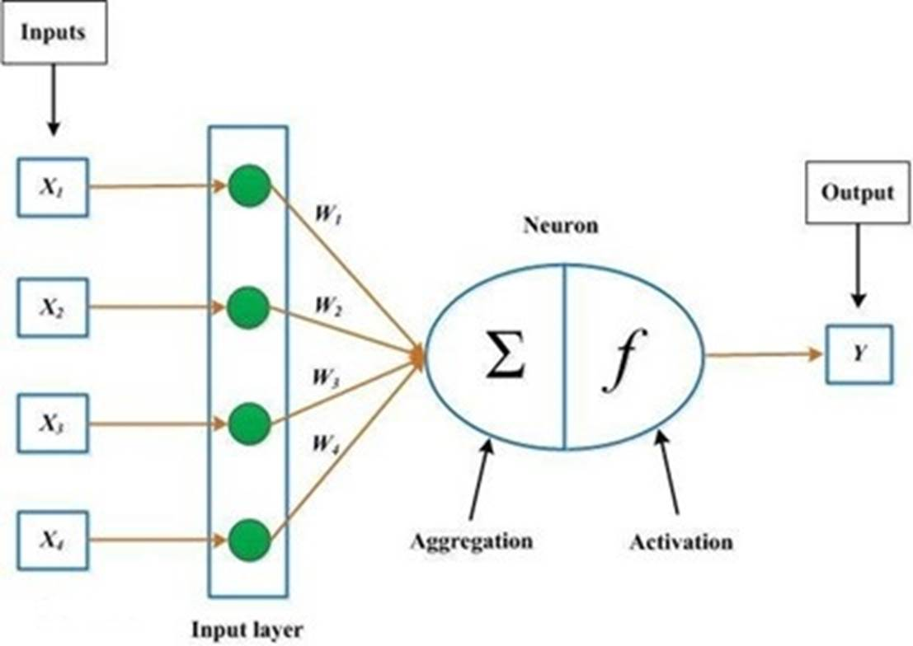
图1 神经网络工作原理
通常来说，常见的激活函数有：
1. Sigmoid 激活函数
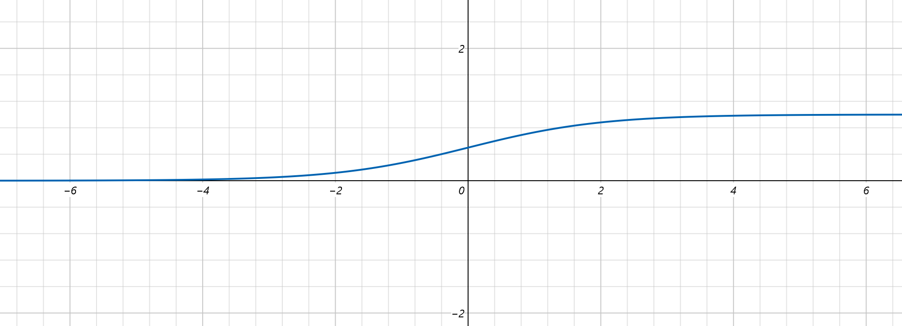
图2 sigmoid激活函数
Sigmoid
函数的图像看起来像一个 S 形曲线。函数表达式为： 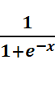
Sigmoid
激活函数具有如下的优点：
Sigmoid
函数的输出范围是 0 到 1。由于输出值限定在 0 到 1，因此它对每个神经元的输出进行了归一化；
用于将预测概率作为输出的模型。由于概率的取值范围是 0 到 1，因此 Sigmoid 函数非常合适；
梯度平滑，避免「跳跃」的输出值；
函数是可微的。这意味着可以找到任意两个点的 sigmoid 曲线的斜率；
明确的预测，即非常接近 1 或 0。
Sigmoid
激活函数有如下的缺点：
倾向于梯度消失；
函数输出不是以 0 为中心的，这会降低权重更新的效率；
Sigmoid
函数执行指数运算，计算机运行得较慢。
2. Tanh / 双曲正切激活函数
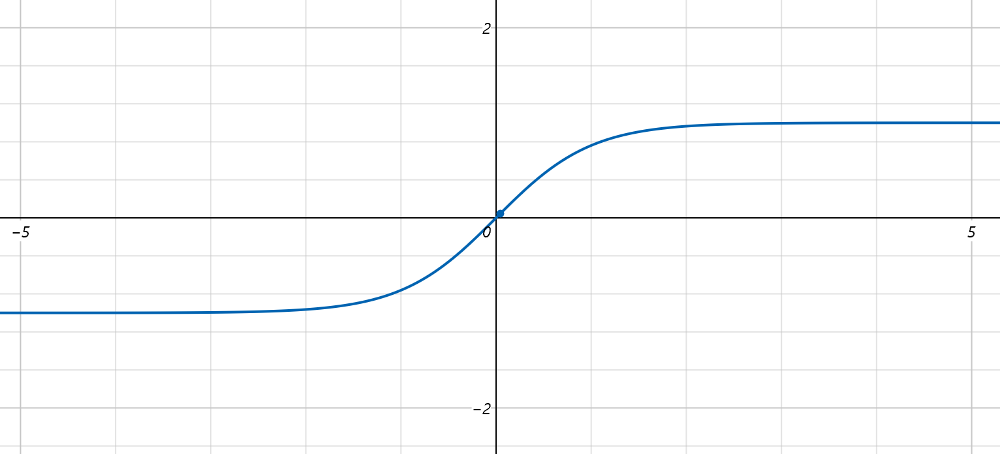
图3
tanh激活函数
tanh 激活函数的图像也是 S 形，表达式为： 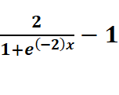
tanh
是一个双曲正切函数。tanh 函数和 sigmoid 函数的曲线相对相似。但是它比 sigmoid 函数更有一些优势。
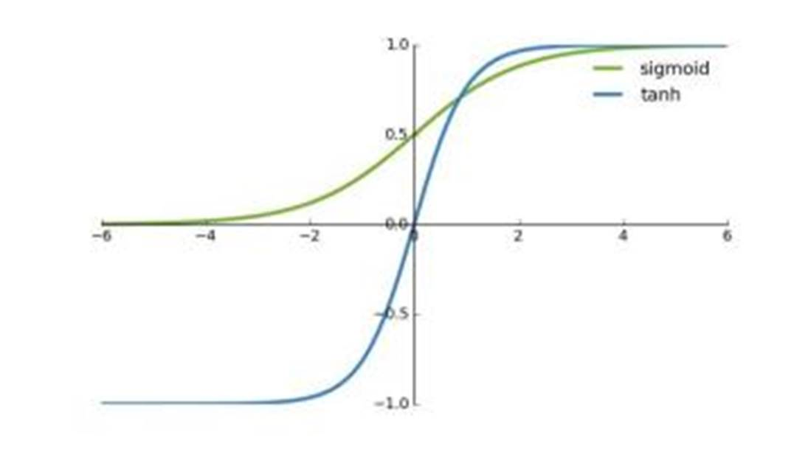
图4
tanh和sigmoid比较图
首先，当输入较大或较小时，输出几乎是平滑的并且梯度较小，这不利于权重更新。二者的区别在于输出间隔，tanh 的输出间隔为 1，并且整个函数以 0 为中心，比 sigmoid 函数更好；
在 tanh 图中，负输入将被强映射为负，而零输入被映射为接近零。
注意：在一般的二元分类问题中，tanh 函数用于隐藏层，而 sigmoid 函数用于输出层，但这并不是固定的，需要根据特定问题进行调整。
3. ReLU 激活函数
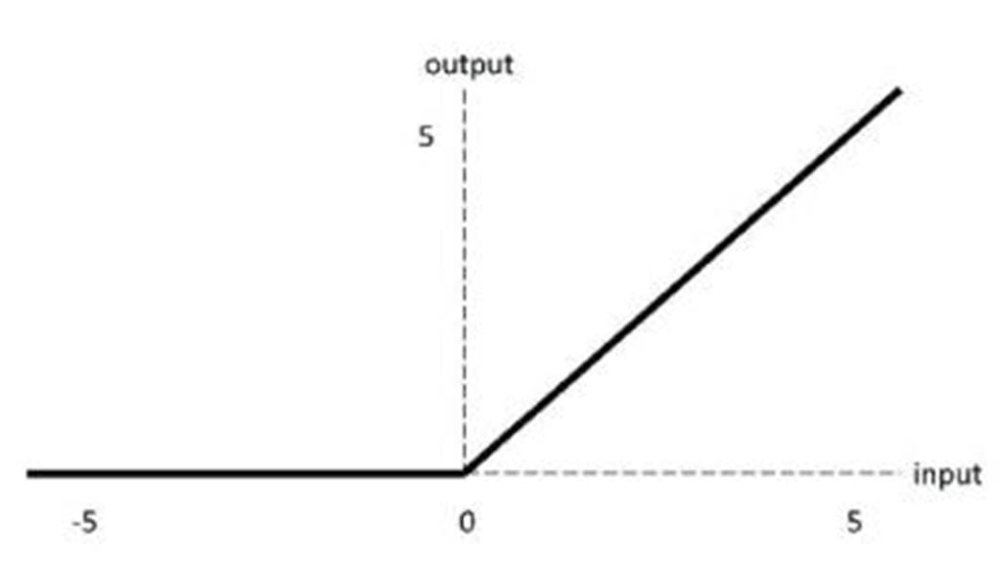
图5 relu激活函数
ReLU 激活函数图像如上图所示，函数表达式为：
ReLU 函数是深度学习中较为流行的一种激活函数，相比于 sigmoid 函数和 tanh 函数，它具有如下优点：
当输入为正时，不存在梯度饱和问题。
计算速度快得多。ReLU 函数中只存在线性关系，因此它的计算速度比 sigmoid 和 tanh 更快。
当然，它也有缺点：
Dead ReLU问题。当输入为负时，ReLU完全失效，在正向传播过程中，这不是问题。有些区域很敏感，有些则不敏感。但是在反向传播过程中，如果输入负数，则梯度将完全为零，sigmoid 函数和 tanh 函数也具有相同的问题；
我们发现 ReLU 函数的输出为 0 或正数，这意味着 ReLU 函数不是以 0 为中心的函数。
4. Leaky ReLU激活函数
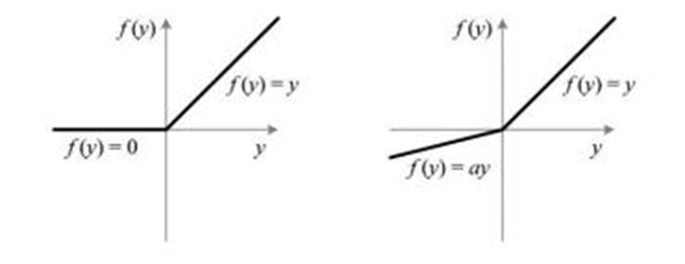
图6
leaky relu激活函数和relu激活函数的比较图
它是一种专门设计用于解决 Dead ReLU 问题的激活函数：
它的表达式为： 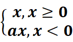
Leaky ReLU 通过把 x 的非常小的线性分量给予负输入（0.01x）来调整负值的零梯度（zero gradients）问题；
leak 有助于扩大 ReLU 函数的范围，通常 a 的值为 0.01 左右；
Leaky ReLU 的函数范围是（负无穷到正无穷）。
注意：从理论上讲，Leaky ReLU
具有 ReLU 的所有优点，而且 Dead ReLU 不会有任何问题，但在实际操作中，尚未完全证明 Leaky ReLU 总是比 ReLU 更好。
5. ELU激活函数
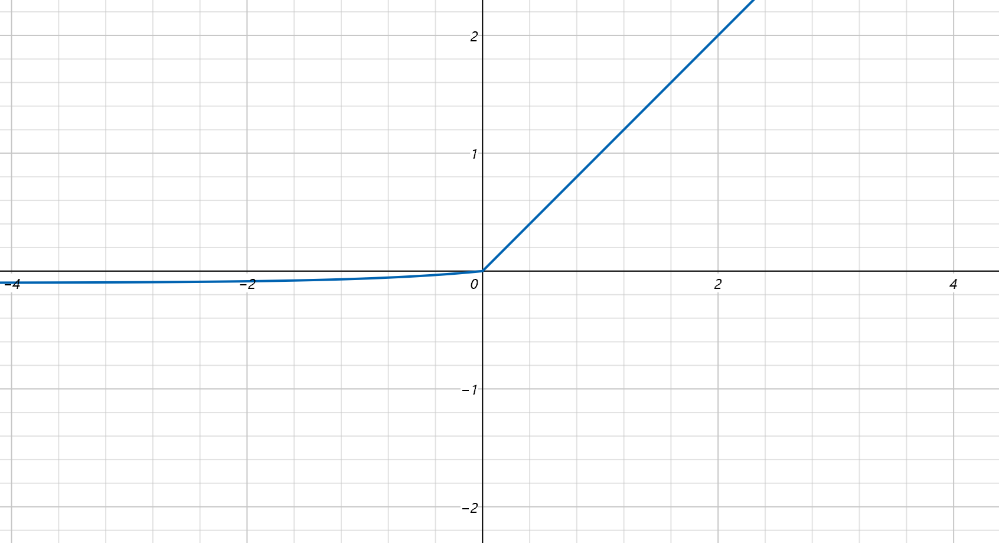
图7 ELU激活函数
ELU 的提出也解决了 ReLU 的问题。与 ReLU 相比，ELU 有负值，这会使激活的平均值接近零。均值激活接近于零可以使学习更快，因为它们使梯度更接近自然梯度。
它的表达式为： 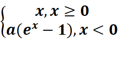
显然，ELU 具有 ReLU 的所有优点，并且：
没有 Dead ReLU 问题，输出的平均值接近 0，以 0 为中心；
ELU 通过减少偏置偏移的影响，使正常梯度更接近于单位自然梯度，从而使均值向零加速学习；
ELU 在较小的输入下会饱和至负值，从而减少前向传播的变异和信息。
一个小问题是它的计算强度更高。与 Leaky ReLU
类似，尽管理论上比 ReLU 要好，但目前在实践中没有充分的证据表明 ELU 总是比 ReLU 好。
6. Swish激活函数
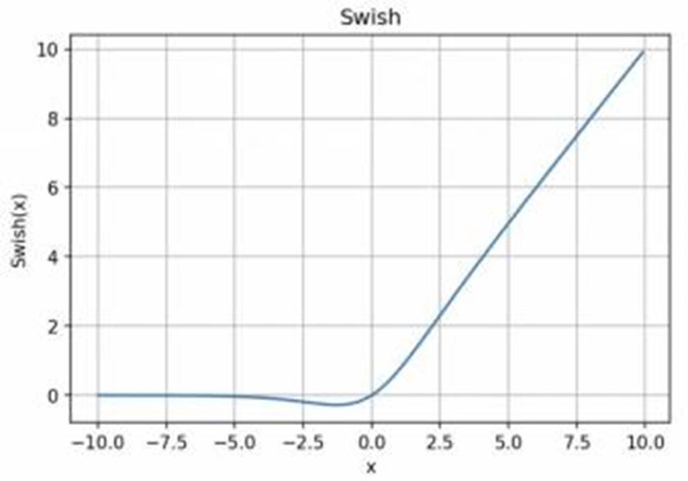
图8 Swish激活函数
函数表达式：y = x * sigmoid (x)
Swish 的设计受到了 LSTM 和高速网络中 gating 的 sigmoid 函数使用的启发。我们使用相同的 gating 值来简化 gating 机制，这称为 self-gating。
self-gating 的优点在于它只需要简单的标量输入，而普通的 gating 则需要多个标量输入。这使得诸如 Swish 之类的 self-gated 激活函数能够轻松替换以单个标量为输入的激活函数（例如 ReLU），而无需更改隐藏容量或参数数量。
Swish 激活函数的主要优点如下：
「无界性」有助于防止慢速训练期间，梯度逐渐接近 0 并导致饱和；（同时，有界性也是有优势的，因为有界激活函数可以具有很强的正则化，并且较大的负输入问题也能解决）；
导数恒 > 0；
平滑度在优化和泛化中起了重要作用。
7
Softplus
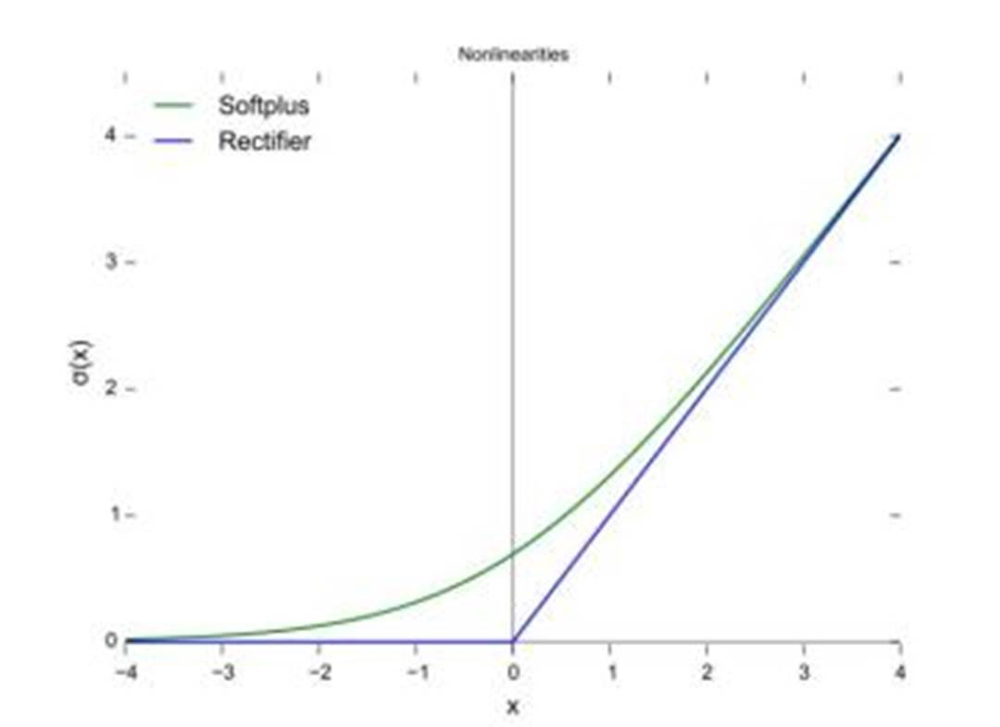
图9 softplus激活函数
Softplus 函数的表达式为： 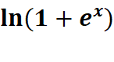
Softplus 函数类似于 ReLU 函数，但是相对较平滑，像
ReLU 一样是单侧抑制。它的接受范围很广：(0, +
inf)。